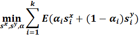

Optimal Diagonal Resize
If we want to conduct several horizontal seams carving and vertical seams carving on an image, the optimal order of choosing these seams is the most important factor for creating a perfect image. And the method of looking for the total lowest energy of ordering these seams can be expressed as following:

where m*n is the original size of image and m'*n' is the resized image, and r = m-m', c=n-n', k=r+c. can have the value of 1 or 0, which means at the order of i-th conduct this seam carving or not.
Using dynamic programming, accumulate the calculation from the beginning point (0, 0), then conduct the computation as the following formula till the final target (i, j).
where T(r, c) stores the minimal cost needed to obtain an image of size (n-r)*(m-c), and the E(...) function links to the energy of carving corresponding seams in the image.
In order to record the order to conducting horizontal and vertical seam carving, I used a binary map of size (r+10)*(c+10) to label the path of carving (making the map bigger than r and c is to make the path more visible especially on the edges of the map). On the map, choosing the top neighbor corresponds to a horizontal seam removal, while choosing a left neighbor corresponds to a vertical seam removal.